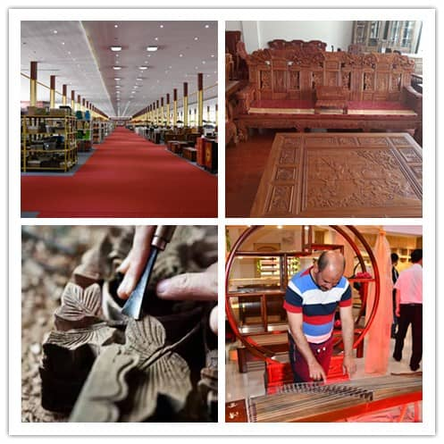
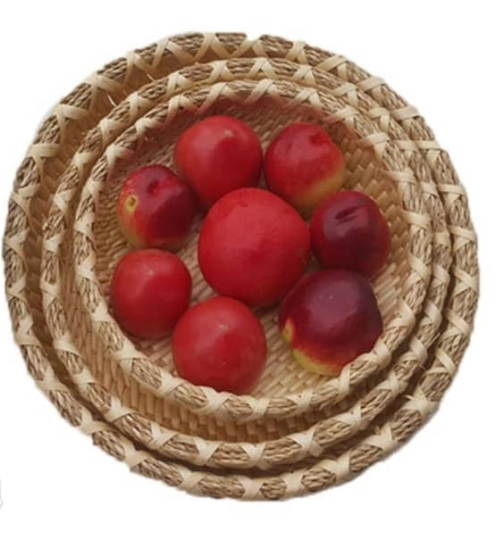
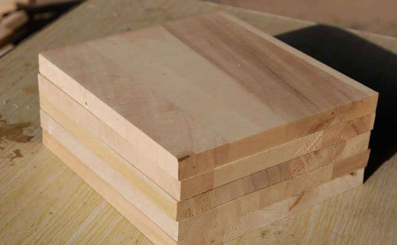
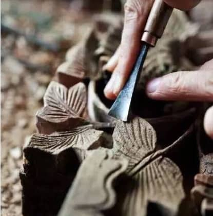

-

城市名片
曹县素有“戏曲之乡”、“书画之乡”、“武术之乡”、“举重之乡”的美称，先后被评为中国柳编之乡、中国芦笋之乡、中国杨木加工之乡、中国泡桐加工之乡、中国食品工业百强县、中国平原绿化先进县、中国百万担优质棉生产基地、中国首批规模化克隆牛实验基地、全国民族团结进步模范单位、全国社会治安综合治理先进集体。
-
中国芦笋之乡
1976年，曹县开始种植芦笋，但面积小，产量较少，主要销往外地。随着芦笋种植效益的提高,面积逐年扩大。2003年，县委、县政府提出发展芦笋产业，成立芦笋产业发展领导小组，使曹县芦笋向规模化、产业化方向发展。当年，曹县被国家农业部命名为“中国芦笋之乡”。2007～2010年，成功举办四届中国（曹县）国际芦笋节，芦笋产业化发展加快。芦笋产业成为农村经济的支柱产业之一。
-

中国柳编之乡
20世纪60年代以前，曹县境内古营集马庄一带就有种植杞条习惯，但面积较小。70年代，古营集、普连集、莘冢集、倪集等乡镇成为杞条种植主产区。主要种植在河旁、沟旁、路旁、渠旁。1986年始，柳条编产业快速发展，杞条市场价格上涨，倪集、普连集、古营集等乡镇大面积发展条粮间作。2004年，曹县被中国林学会命名为“中国柳编之乡”。曹县成为享誉中外的杞条生产、加工基地。
-

中国杨木加工之乡
曹县是全国最适宜植树的地区之一，是国家命名的平原绿化达标县、京九绿化示范县、淮太流域造林项目示范县、沙化治理先进县。全县林地面积发展到85万亩，农田林网176万亩，农桐间作40万亩，杞条8万亩，名特优果园7万亩，林木蓄积量289万立方，林木覆盖率达到28.8%。2004年6月，被中国林学会授予“中国杨木加工之乡”。
-
中国泡桐加工之乡
曹县是全国最适宜植树的地区之一，是国家命名的平原绿化达标县、京九绿化示范县、淮太流域造林项目示范县、沙化治理先进县，主要产品有桐木拼板、木制家具、木制工艺品等。2004年，曹县被中国林学会命名为“中国泡桐加工之乡”，2008年，曹县被省经贸委命名为“山东省桐柳制品产业基地”。
-

中国木艺之都
曹县位于鲁豫两省八县交界处、山东省最西南边缘，县域面积1969平方公里，总人口170万，是山东省人力资源第一大县。地处黄河冲积平原，曹县土地肥沃，光照充足，水源充沛，天然适合林木生长，所以林木相关产业有着悠久的历史传承，据考证，曹县的木制品加工产业的历史可以追溯到明代末年。

{kind=link}
{kind=link}
{kind=link}
{kind=link}
{kind=link}
{kind=link}